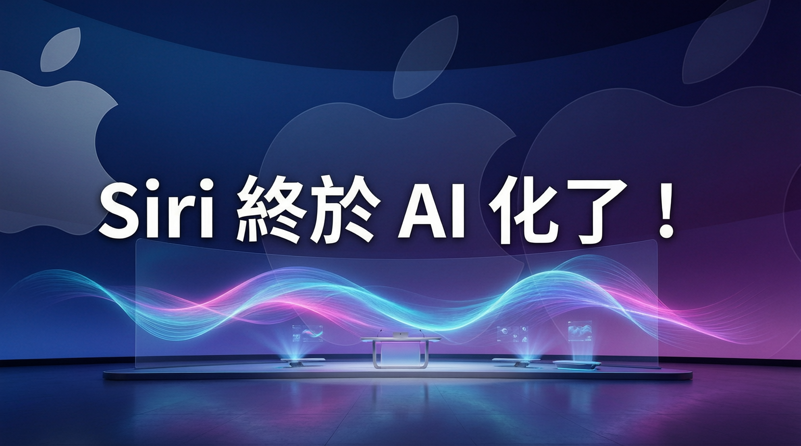

Tim Cook 告別之作：Google Gemini 加持、新版 Siri 獨立 App、iOS 27 全面更新

WWDC 2026 是 Tim Cook 最後一次以 CEO 身份主持的 WWDC，主軸是 Siri AI 革新和 iOS 27，Apple 終於準備好展示與 ChatGPT 和 Gemini 競爭的新版 Siri。
經過兩年多的承諾與延遲，Apple 終於在 WWDC 2026 展示真正 AI 化的 Siri。Apple 承認在 AI 時代用戶對 Siri 的期望已大幅提高，這次革新包含：
除了 Siri 革新，iOS 27 還帶來多項實用更新：
Liquid Glass 設計語言持續沿用，但用戶可選擇淡化或凸顯其元素。此外還有 Apple Wallet 分帳功能、Weather App 新增「條件」面板、Image Playground 和 Genmoji 更新等。
這是 Tim Cook 作為 Apple CEO 的最後一屆 WWDC，他將於 9 月 1 日將 CEO 職位交棒給硬件工程高級副總裁 John Ternus。
Apple 兩年前就承諾 AI 版的 Siri，但多次延遲交付，還因此面臨 2.5 億美元的集體訴訟（Apple 未承認任何過錯）。這次與 Google Gemini 的合作，顯示 Apple 在 AI 競賽中選擇借力而非硬拚。
「Apple 承認在 AI 時代用戶對 Siri 的期望已大幅提高，這次終於準備好展示與 ChatGPT 和 Gemini 競爭的新版 Siri。」
— EngadgetWWDC 2026 被視為近年來最重要的 Apple 開發者大會。Siri 能否真正與 ChatGPT 和 Gemini 競爭，將是業界關注的焦點。Tim Cook 的告別加上 AI Siri 的正式亮相，讓這屆 WWDC 別具意義。
| 比較項目 | 舊版 Siri | 新版 AI Siri |
|---|---|---|
| 對話能力 | 指令式互動 | 理解上下文、多步驟任務 |
| App 整合 | 系統嵌入 | 獨立 App + 跨 App 互動 |
| AI 模型 | Apple 自家模型 | Google Gemini 加持 |
| 視覺智能 | 無 | 支援 Visual Intelligence |
| 用戶選擇 | 無 | 可選第三方 AI 模型 |